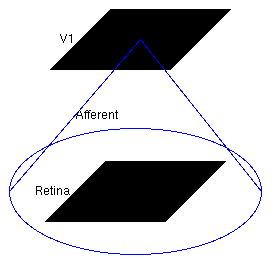
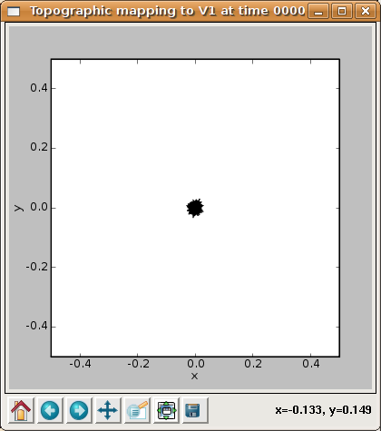
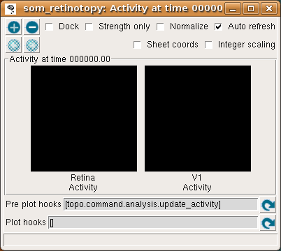
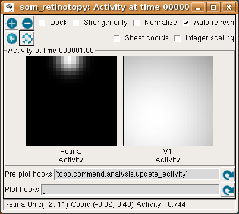
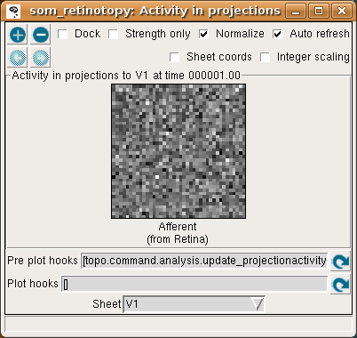
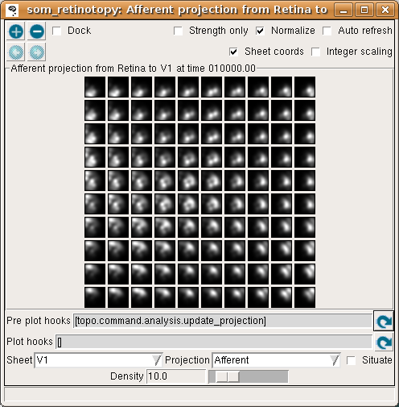
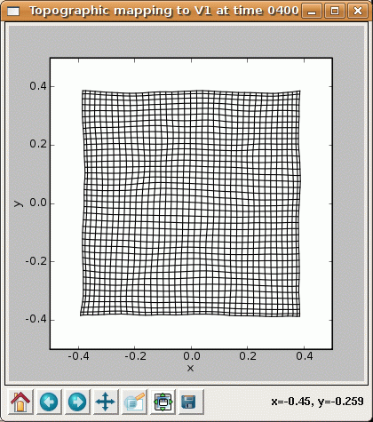

SOM Retinotopic Map¶
This tutorial shows how to use the Topographica simulator to explore a simple retinotopic map simulation. This particular example, taken from Chapter 3 of the book Computational Maps in the Visual Cortex, uses a Kohonen-type Self-Organizing Map (SOM). Topographica also supports a wide range of other models, and is easily extensible for models not yet supported.
This tutorial assumes that you have already followed the instructions for obtaining and installing Topographica.
Self-organization¶
In this example, we will see how a simple model cortical network develops a mapping of the dimensions of variance in the input space.
First, get a copy of the example files to work with if you do not have them already, and open a terminal in the examples directory (the path of the examples directory is printed by Topographica when you are getting a copy of the example files).
To start the full simulation from the book using the Topographica GUI, you could run:
topographica -p retina_density=24 -p cortex_density=40 \ som_retinotopy.ty -g
(all on one line, with no backslash). These changes can also be made in the .ty file itself, if you do not want to type them each time you run the program.
However, the default is to use a much smaller network that is faster to run while getting similar results. To do this, start topographica:
topographica -g
You should now see a window for the GUI:

The font, window, and button style will differ on different platforms, but similar controls should be provided.
Then, from the Simulation menu, select Run Script and open som_retinotopy.ty from the examples directory.
(The plots below show the results from the full density of the book simulation, but results are similar for the default (lower) densities.)
This simulation is a small, fully connected map, with one input sheet and one cortical sheet. The architecture can be viewed in the Model Editor window (which can be selected from the Simulation menu), but is also shown below:
The large circle indicates that these two Sheets are fully connected.
To see the initial state of this network, select Projection from the Plots menu to get the Projection window, and press the Pre plot hooks’ refresh arrow as the window suggests. This plot shows the initial set of weights from a 10x10 subset of the V1 neurons:

Each neuron is fully connected to the input units, and thus has a 24x24 array of weights as shown above, or a 10x10 array if using the default (reduced) density. Initially, the weights are uniformly random.
We can visualize the mapping from the input space into the cortical space using a Center of Gravity plot. To get one, open the Plots menu from the Topographica Console, select Preference Maps and then Center of Gravity, and press the Refresh button by the Pre-plot hooks to get several plots. These plots show the results of computing the center of gravity (a.k.a. centroid or center of mass) of the set of input weights for each neuron.
This data is presented in several forms, of which the easiest to interpret at this stage is the Topographic mapping window. This plot shows the CoG for each V1 neuron, plotted on the Retina:
Each neuron is represented by a point, and a line segment is drawn from each neuron to each of its four immediate neighbors so that neighborhood relationships (if any) will be visible. From this plot is is clear that all of the neurons have a CoG near the center of the retina, which is to be expected because the weights are fully connected and evenly distributed (and thus all have an average (X,Y) value near the center of the retina).
The same data is shown in the Center of Gravity plot window, although it is more difficult to interpret at this stage:

where the V1 X CoG plot shows the X location preferred by each neuron, and the V1 Y CoG plot shows the preferred Y locations. The monochrome values are scaled so that the neuron with the smallest X preference is colored black, and that with the largest is colored white, regardless of the absolute preference values (due to Normalization being enabled). Thus the absolute values of the X or Y preferences are not visible in these plots. (Without normalization, values below 0.0 are cropped to black, so only normalized plots are useful for this particular example.)
The colorful plot labeled “V1 CoG” shows a false-color visualization of the CoG values, where the amount of red in the plot is proportional to the X CoG, and the amount of green in the plot is proportional to the Y CoG. Where both X and Y are low, the plot is black or very dark, and where both are high the plot is yellow (because red and green light together appears yellow). This provides a way to visualize how smoothly the combined (X,Y) position is mapped, although at this stage of training it is not particularly useful.
The behavior of this randomly connected network can be visualized by plotting the activation of each neuron, which shows the final cortical response to the given input pattern. Select Activity from the Plots menu to get the following plot:
This window shows the response for each Sheet in the model, which is zero at the start of the simulation (and thus both plots are black).
To run one input generation, presentation, activation, and learning iteration, click in the Run for field of the Topographica Console window, make sure it says 1, and hit Go. The Activity window should then refresh to show something like:
In the Retina plot, each photoreceptor is represented as a pixel whose shade of grey codes the response level, increasing from black to white. The som_retinotopy.ty file specified that the input be a circular Gaussian at a location that is random in each iteration, and in this particular example the location is near the border of the retina. The V1 plot shows the response to that input, which for a SOM is initially a large Gaussian-shaped blob centered around the maximally responding unit.
To see more detail about what the responses were before SOM’s neighborhood function forced them into a Gaussian shape, you can look at the Projection Activity plot, which shows the feedforward activity in V1:
Here these responses are best thought of as Euclidean proximity, not distance. This formulation of the SOM response function actually subtracts the distances from the max distance, to ensure that the response will be larger for smaller Euclidean distances (as one intuitively expects for a neural response). The V1 feedforward activity appears random because the Euclidean distance from the input vector to the initial random weight vector is random.
If you now hit the Refresh arrow for the pre-plot hooks in the Projection window, you’ll see that most of the neurons have learned new weight patterns based on this input.

(You should probably turn on the Auto-refresh button so that this plot will stay updated for the rest of this session.) Some of the weights to each neuron have now changed due to learning. In the SOM algorithm, the unit with the maximum response (i.e., the minimum Euclidean distance between its weight vector and the input pattern) is chosen, and the weights of units within a circular area defined by a Gaussian-shaped neighborhood function around this neuron are updated.
This effect is visible in the Projection plot – a few neurons around the winning unit at the top middle have changed their weights. Continue pressing Go in the Console window to learn a few more patterns, each time noticing that a new input pattern is generated and the weights are updated. After a few iterations it should be clear that the input patterns are becoming represented in the weight patterns, though not very cleanly yet:

If you look at the Projection Activity window, you will see that the activation patterns are becoming smoother, since the weight vectors are now similar between neighboring neurons.
Continue training for a while and looking at the activation and weight patterns. Instead of 1, you can change the Run for field to any number to train numerous iterations in a batch, e.g. 1000. Using a large number at once is fine, because it is safe to interrupt training by pressing the Stop button, and plots can safely be refreshed even during training. After 5000 iterations, updating the Center of Gravity should result in something like:

The X and Y CoG plots are now smooth, but not yet the axis-aligned gradients (e.g. left to right and bottom to top) that an optimal topographic mapping would have. Similarly, the topographic grid plot:

shows that the network is now responding to different regions of the input space, but that most regions of the input space are not covered properly. Additional training up to 10000 iterations (which becomes faster due to a smaller neighborhood radius) leads to a flat, square map:

although the weight patterns are still quite broad and not very selective for typical input patterns:
and by 40000 the map has good coverage of the available portion of the input space:
The final projection window at 40000 now shows that each neuron has developed weights concentrated in a small part of the input space, matching a prototypical input at one location:

For this particular example, the topographic mapping for the x dimension happens to be in the same orientation as the retina, while the mapping for the y dimension is flipped so that the neurons along the top edge of V1 respond to the bottom edge of the retina. Nothing in the network drives it to have any particular overall orientation or mapping apart from aligning to the square shape, and the map may turn out to be flipped or rotated by 90 degrees along any axis with equivalent results.
Now, re-run the basic simulation by quitting and restarting Topographica. This time, change one of the parameter values, either by editing the som_retinotopy.ty file before starting, or by providing it on the command line before the script name (for those parameters set via global_params). For instance, the starting value of the neighborhood radius (from which all future values are calculated according to exponential decay) is 1.0. You can change this value as you see fit, e.g. to 0.1, by passing -p radius_0=0.1 on the command line before the .ty file. With such a small learning radius, global ordering is unlikely to happen, and one can expect the topographic grid not to flatten out (despite local order in patches).
Similarly, consider changing the initial learning rate from 0.42 to e.g. 1.0 (e.g. by passing -p alpha_0=1.0 on the command line). The retina and V1 densities cannot be changed after the simulation has started, but again, they can be changed by providing their values on the command line as above (or by editing the som_retinotopy.ty file) and starting Topographica again.
You can also try changing the input_seed (“-p input_seed=XX”), to get a different stream of inputs, or weight_seed (“-p weight_seed=XX”), to get a different set of initial weights. With some of these values, you may encounter cases where the SOM fails to converge even though it seems to be working properly otherwise. For instance, some seed values result in topological defects like a ‘kink’:

This condition represents a local optimum from which the network has difficulty escaping, where there is local order over most of the map except for a discontinuity.
Finally, you could change the input pattern to get a different type of map. E.g. if an oriented pattern is used, with random orientations, neurons will become selective for orientation and not just position. In general, the map should form a representation of the dimensions over which the input varies, with each neuron representing one location in this space, and the properties of nearby neurons typically varying smoothly in all dimensions.
Exploring further¶
To see how the example works, load the som_retinotopy.ty file into a text editor and see how it has been defined, then find the corresponding Python code for each module and see how that has been defined.
Topographica comes with additional examples, and more are always being added. Any valid Python code can be used to control and extend Topographica; documentation for Python and existing Topographica commands can be accessed from the Help menu of the Topographica Console window.
Please contact jbednar@inf.ed.ac.uk if you have questions or suggestions about the software or this tutorial.